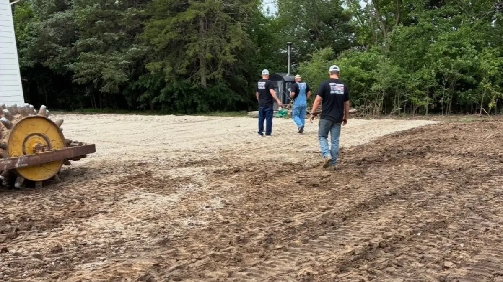

Excavation & Trenching
Site clearing, grading, and excavation for new builds, additions, and utilities across Central Kansas.
Learn MorePrecision grading and compaction for homes, shops, barns, and outbuildings across Central Kansas. Get the ground right before you build — it matters more than most people realize.

A building pad is only as good as the work that goes into it. Improper grading and compaction cause settling, cracking, drainage problems, and structural issues that cost far more to fix than they would have to prevent. Mike's Services LLC prepares building sites across Central Kansas the right way — proper grade, proper compaction, proper drainage slope from the start.
Request a QuoteA building pad is a carefully prepared area of ground that will support a structure — whether that is a house, a shop, a barn, a mobile home, a concrete slab, or any other permanent or semi-permanent building. Site prep is the broader process of getting raw land ready for construction — clearing vegetation, establishing proper grade, installing drainage, compacting subgrade, and creating a stable base that will support whatever you are building for decades without settling or shifting.
In Central Kansas, soil conditions vary enough across the region that a one-size-fits-all approach to site prep does not work. Heavy clay soils in lower elevations hold water and expand and contract significantly with moisture changes — a building pad on clay that has not been properly prepared will move with the seasons. Sandy or loamy soils drain better but may require additional compacted fill to achieve the bearing capacity needed for a structure. We assess what is under your site before we start grading so the prep work matches actual ground conditions.
The process starts with stripping topsoil from the building footprint and stockpiling it for later use around the site. We then cut and fill to establish the target elevation, compact the subgrade in lifts to achieve uniform density, bring in base material if needed, and finish grade to slope away from the building footprint for drainage. For concrete slabs we work to the elevation spec your contractor requires. For gravel pads under metal buildings and barns we establish grade, compact the base, and top with the appropriate gravel depth.
Getting the pad right is the most important thing you can do before construction begins. Everything built on top of it depends on it. We take that seriously on every job we do.
Building pad and site prep services from Mike's Services LLC include:
Mike's Services LLC provides building pad preparation and site prep throughout Central Kansas including Salina, Tescott, Bennington, Minneapolis, Lincoln, Ellsworth, and Abilene. We serve property owners across Saline County, Ottawa County, Lincoln County, Dickinson County, Ellsworth County, and Cloud County. Planning a build and not sure if we cover your location? Call us — we will give you a straight answer.
Common questions from Central Kansas property owners about building pad preparation.
Ideally site prep is completed at least a few weeks before your contractor arrives so the compacted pad has time to settle and any drainage issues can be identified and corrected. We work with your construction timeline and coordinate with your builder to make sure the pad is ready when they need it.
Yes. Even structures that sit on gravel rather than a concrete slab need a properly graded and compacted base. Without it, posts sink unevenly, water pools inside the building, and the floor becomes rough and unstable over time. We prepare gravel pads for metal buildings and pole barns across Central Kansas regularly.
Fill requirements depend on your existing grade and your target elevation. We calculate cut and fill volumes during our site assessment and include material costs in the quote. If significant fill is needed we source it and factor hauling into the project scope.
Yes. We work to elevation specifications provided by your concrete contractor or builder. If you have engineered drawings with grade requirements we work to those specs. Clear communication between site prep and construction crews prevents problems at the foundation stage.
Drainage problems need to be addressed during site prep — not after the building is up. If your site has low spots, poor natural drainage, or water that flows toward the building footprint, we grade and slope the pad to redirect water away from the structure and install drainage solutions where needed. Fixing drainage after construction is significantly more expensive.
Site prep is often part of a bigger project — we handle the full scope.
Site clearing, grading, and excavation for new builds, additions, and utilities across Central Kansas.
Learn More
Full septic system installation including excavation, tank placement, drain field, and inspector coordination.
Learn More
Property clearing, pasture clearing, brush removal, and debris hauling for residential and commercial lots.
Learn More
Small and large demolition, removal, and clean-up with safe disposal and efficient hauling.
Learn More📄 From the Blog: Excavation & Utility Trenching in Central Kansas — What Mike's Crew Handles — read the full guide.
📄 From the Blog: Acreage Building Site Prep in Saline County, Kansas — read the full guide.
Tell us what you are building and where. We will come out, assess the ground, and give you a clear quote before any work begins.